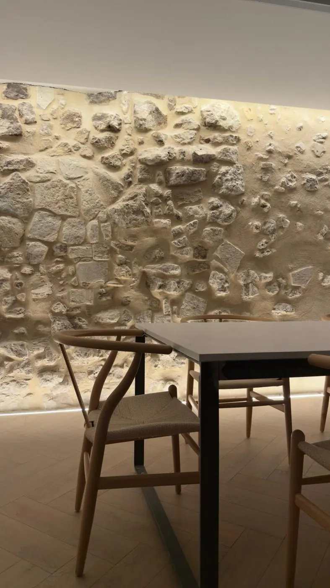
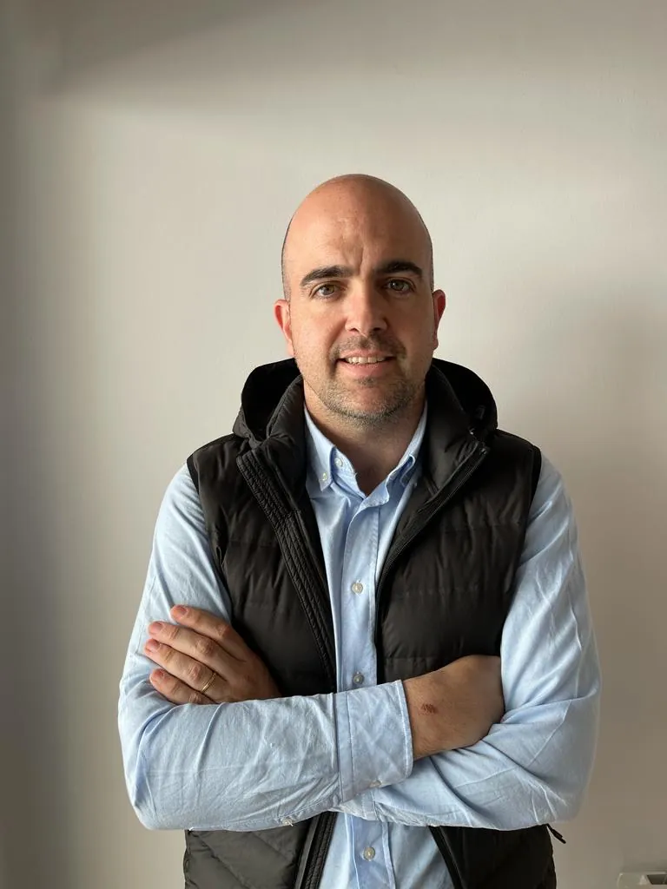
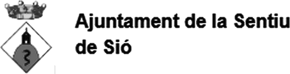
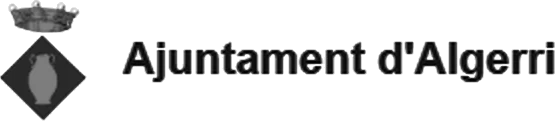

Segueix l’estudi
Obres, detalls i projectes en curs.
Una sola persona, del primer traç a les claus.

dexo és un estudi d’arquitectura amb seu al Passatge Gaspar de Portolà, 1, de Balaguer. Des del 2011 desenvolupem projectes d’arquitectura, rehabilitació i interiorisme, i assumim la direcció d’execució i la coordinació de seguretat i salut d’obres d’habitatge, equipaments i locals d’activitat.
Cada encàrrec parteix del lloc i de les condicions reals de l’obra. Busquem una resposta concreta per a cada projecte: espais funcionals, ben construïts i fàcils d’entendre, de la primera idea fins a l’últim detall.
Acompanyem el client en totes les fases, de la planificació i el projecte a la tramitació, la construcció i la supervisió. Tenir una sola persona de referència assegura un seguiment proper i decisions àgils.
Integrem criteris de sostenibilitat a cada projecte per reduir l’impacte ambiental i millorar l’eficiència energètica dels edificis, sempre en estreta col·laboració amb el client i atents als seus objectius.

Obres, detalls i projectes en curs.
Formació BIM a la Universitat de Lleida, centre Autodesk Authorized Academic Partner. Projectes modelats i coordinats en BIM.
Homologat pel Departament d’Interior i Seguretat Pública de la Generalitat de Catalunya.
Han confiat en nosaltres empreses, entitats, ajuntaments i departaments de la Generalitat.


Habitatges, rehabilitacions, equipaments i locals. Cliqueu un projecte per veure'n les fotos.
Reconeixements en concursos i fires.
Expliqueu-me què voleu construir o rehabilitar i us respondré personalment.